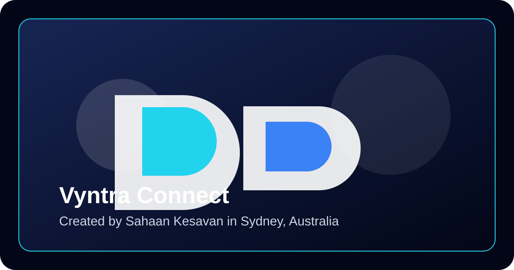

Messaging that changes with your vibe
One chat app. Multiple worlds.
Vyntra Connect is a modern communication platform created by Sahaan Kesavan in Sydney, Australia. It is designed to help users connect through communities and direct messaging in a simple, organised, and user-friendly environment.
